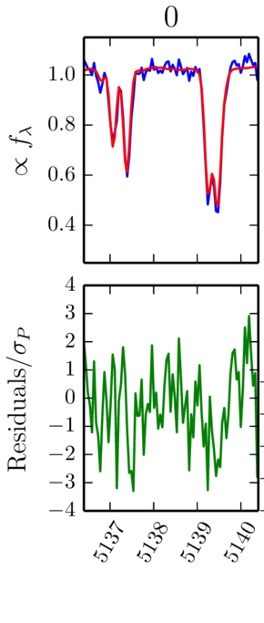

Stellar Properties in the Presence of Correlated Noise
Using covariance matrices to cope with systematic errors
by Ian Czekala
Harvard CfA, iczekala@cfa.harvard.edu
Overview: Determining the properties of stars
Graphical overview of how this works.
Fitting synthetic spectra

Any spectrum whose line spread function (LSF) is properly sampled will have correlated pixels. This means that any fit to spectra should take the correlated noise into account.
Class III errors: these likely contain the most information about stellar properties.
Continuum normalization
Depending on what kind of spectrum you may be using, it's likely that there will be some sort of continuum mis-match. Our method of dealing with this is to multiply by a Chebyshev polynomial.
Covariance kernels
Matern kernel for global covariance structure
$$ k_{\nu = 3/2}(r, a, l) = a \left(1 + \frac{\sqrt{3} r}{l} \right ) \exp \left (- \frac{\sqrt{3} r}{l} \right ) $$
tapered for compact support with a Haan window
$$ w(r) = 0.5 + 0.5 \cos \left( \frac{\pi r}{r_0} \right) $$
What to do with the bad regions of the spectrum